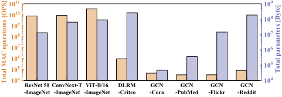
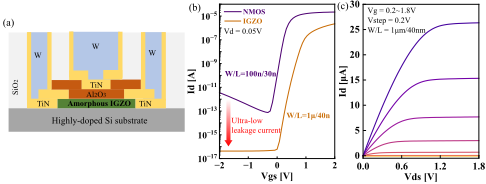
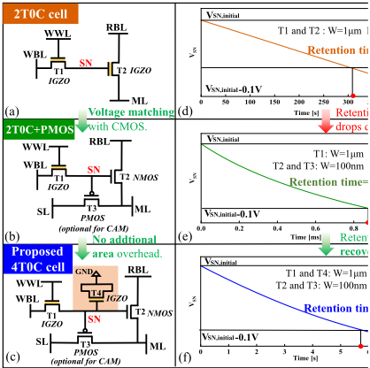
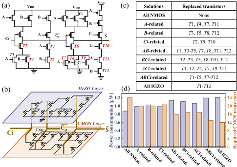
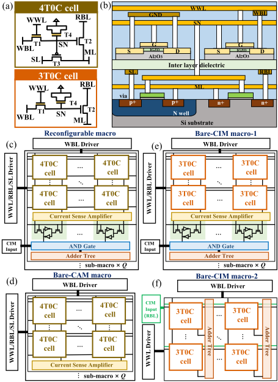
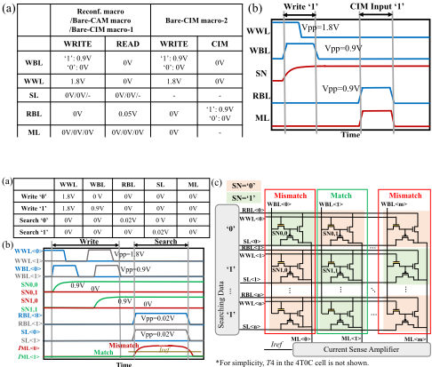
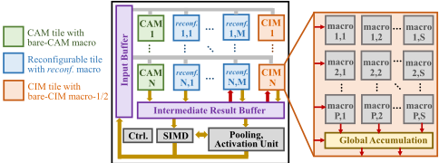
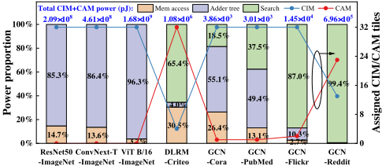
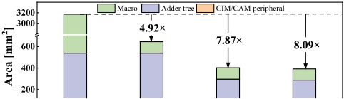
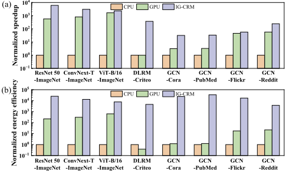

IG-CRM：面向可重构 CIM/CAM 应用的面积/能效高效 IGZO 电路与架构设计
AI 应用对 CIM（MAC）与 CAM（内容搜索）的需求比例差异巨大，现有架构采用固定分离的 CIM/CAM 模块导致利用率低，且 SRAM 密度低、RRAM 存在阻变漂移与写耐久受限问题。论文提出 IG-CRM，自称首个基于 IGZO 器件的可重构 CIM/CAM 电路与架构设计：单元级提出 3T0C/4T0C 单元，以 NMOS 替换 IGZO 读管支持高频、以 PMOS 与附加 IGZO 隐藏电容支持 CAM 并将保持时间恢复至 5.8s，仅 WWL 需 1.8V 电压；电路级利用 BEOL 3D 堆叠将加法树中 NMOS 替换为 IGZO，提供 12.5%-50% 面积节省与 12.6%-37.9% 功耗开销的多种折中方案；架构级构建可重构/bare-CIM/bare-CAM 四种宏与 tile，按应用离线分析的 search/MAC 负载比例分配 CIM/CAM 模式。实验显示相对 SRAM 非可重构基线面积节省 8.09×，相对 CPU/GPU 平均加速 1.53×10³×/51.9×、能效提升 1.63×10⁴×/7.62×10³×。对团队的价值主要在于 IGZO 增益单元与 BEOL 3D 堆叠等新兴存储技术趋势跟踪，以及 workload 驱动架构配置方法的借鉴。
DNN/Transformer 类应用以 MAC（CIM）操作为主，RecSys/GCN 类应用以内容搜索（CAM）为主且参数量比 MAC 高 1-3 个数量级，不同应用的 CIM/CAM 负载比例与模型规模差异大；现有架构采用分离且固定的 CIM/CAM 模块，无法在单芯片内高效支持多类算法。器件层面，SRAM 做 CIM/CAM 密度低（CIM 需 6T 以上、CAM 通常 9T/10T），RRAM 存在阻变漂移与有限写耐久（10⁵-10⁷）；IGZO 虽具超低漏电、>300s 保持时间、4F² 密度与 BEOL 3D 堆叠能力，但工作电压高、导通电流小导致频率低，且与 CMOS 工作电压不兼容。
三层协同设计：(1) 单元级——提出 3T0C/4T0C IGZO 单元：用 NMOS 替换原 IGZO 读管 T2 以支持高频执行，增加可选 PMOS T3 与 T2 分别匹配 '0'/'1' 实现 CAM 功能，再增加接 GND 的 IGZO T4 作为附加隐藏电容，将 2T0C+PMOS 结构 0.884ms 的保持时间恢复到 5.8s，且 T4 可 3D 堆叠不增加面积；仅 WWL 需 1.8V 栅压并与其他电压域隔离。(2) 电路级——数字 CIM 采用加法树，探索多种以 BEOL IGZO 替换 1-bit 全加器中 NMOS 的方案（A-related/Ci-related/All IGZO 等），前端仿真频率均 ≥1GHz，提供面积/功耗折中。(3) 架构级——基于 4T0C/3T0C 单元构建 recinf./bare-CIM macro-1/bare-CIM macro-2/bare-CAM 四种宏（含 CSA、本地 SRAM、AND 门与加法树），组成 NCAM/NCIM/N×M recinf. tile 的 IG-CRM 架构，离线分析应用的 search/MAC 负载后为 tile 分配 CIM/CAM 模式，CAM 与 CIM tile 流水执行，空闲 tile 断电，输入/输出并行度可调。
相对 SRAM-based 非可重构 CIM/CAM 基线（32 CIM + 32 CAM tiles），依靠 3T0C/4T0C 单元、IGZO 混合加法树与可重构宏累计实现 8.09× 面积节省（逐级为 4.92×/7.87×/8.09×）
相对 Intel i7-11700F CPU：平均 1.53×10³× 加速（范围 31.8×-6.09×10³×）、平均 1.63×10⁴× 能效提升（范围 3.77×10³×-3.45×10⁴×）
相对 NVIDIA RTX3060 GPU：平均 51.9× 加速（范围 1.24×-3.73×10²×）、平均 7.62×10³× 能效提升（范围 12.1×-2.76×10⁴×）；DNN 上较 GPU 加速 3.8×-10.6×，在 Criteo/Cora/PubMed 上较 GPU 快 1-2 个数量级
混合加法树各 IGZO 替换方案节省 12.5%-50% 面积、增加 12.6%-37.9% 功耗，Cadence Spectre 前端仿真频率均 ≥1GHz
4T0C 单元保持时间 5.8s（2T0C 为 311s，2T0C+PMOS 为 0.884ms）；整体架构 393mm²，CIM/CAM 全开峰值功耗 20.7W/13.5W，IGZO 写 20MHz、读/CIM/CAM 400MHz，基于 28nm CMOS 工艺
论文自称首个 IGZO 基可重构 CIM/CAM 电路与架构设计。与以往工作的区别：(1) 以往 DNN 架构只含 CIM 无 CAM，图/推荐应用架构（GaaS-X、iMARS）采用分离固定的 CIM/CAM 模块，IG-CRM 通过 3T0C/4T0C 单元与四种宏在单芯片内按负载重构 CIM/CAM 功能；(2) 首次将 BEOL 兼容的 IGZO 用于替换数字加法树中的 NMOS 以节省面积（此前 IGZO 主要以 2T0C 增益单元形式做存储）；(3) 通过附加隐藏电容 IGZO（T4）解决 NMOS 读管引入后保持时间骤降的问题。
相关度级别：medium
命中能力域：2.1 IP 架构与微架构
理由：论文核心是新型器件（IGZO）驱动的 CIM/CAM 存储宏与可重构架构设计，其'面向 PPA 的多方案架构折中'与'按 workload 离线分析分配计算/存储资源'的做法与 2.1 中内存架构设计、PPA 权衡与 workload-driven 建模部分对应；IGZO 2T0C/3T0C/4T0C 增益单元、BEOL 3D 堆叠等新兴存储技术对存储 IP 团队的技术路线跟踪有前瞻参考价值。但其应用对象是 AI 计算加速而非 LPDDR/DDR5/HBM4/UCIe 类接口 IP，核心技术手段（器件-电路协同设计、CSA 模拟感知、阵列版图）不在团队的 RTL/验证/时序技术栈内，全文亦无 RTL 设计、验证方法学或 sign-off 相关内容，故判为 medium 而非 high。
建议动作：作为方法参考存档
IG-CRM：面向可重构CIM/CAM应用的面积/能效高效IGZO电路与架构设计
Zeyu Guo 1,2, Jinshan Yue 1∗, Shengzhe Yan 1,2, Zhuoyu Dai 1,2, Xiangqu Fu 1,2, Zhaori Cong 1,2, Zening Niu 1, Ke Hu 1,2, Lihua Xu 1,2, Jiawei Wang 1, Lingfei Wang 1,2, Guanhua Yang 1, Di Geng 1,2, Ling Li 1,2∗
1 中国科学院微电子研究所，中国北京
∗ 通讯作者：{yuejinshan, lingli}@ime.ac.cn
2 中国科学院大学，中国北京
得益于所集成的存储与计算单元，其具有高能效和高吞吐量[5]。同时，内容寻址存储器（CAM）[6]对于向量搜索操作十分高效，能够在单个时钟周期内执行大规模并行搜索。
近来，此前多用作薄膜晶体管（TFT）的铟镓锌氧化物（IGZO）晶体管正受到广泛关注。得益于其超低漏电流，具有>300s保持时间和4𝐹²密度（𝐹：特征尺寸）的2晶体管0电容器（2T0C）结构，是面向未来高密度存储与存内计算（CIM）/CAM功能的一种有前景的解决方案[9, 10, 11]。此外，IGZO晶体管与后道工艺（BEOL）兼容，因此可三维堆叠于CMOS之上以节省面积。然而，高工作电压和低工作频率对于CIM/CAM功能而言仍是挑战。
尽管已有多种器件被用于实现CIM/CAM功能，但它们仍存在一些非理想特性，例如静态随机存取存储器（SRAM）[7]的低密度、阻变存储器（RRAM）[8]的阻值变化与有限耐久性。类似问题也存在于CAM功能中。
先前的工作已针对深度神经网络（D
人工智能正随着深度神经网络（DNN）、Transformer、推荐系统（RecSys）和图卷积网络（GCN）等多种算法不断演进。相应地，乘累加（MAC）和内容搜索是两类主要运算，可在新兴的存内计算（CIM）和内容寻址存储器（CAM）范式上高效执行。近来，新兴的铟镓锌氧化物（IGZO）晶体管成为CIM/CAM电路的一种有前景的候选器件，其特点是超低泄漏、大于300s的数据保持时间以及高密度的后道工艺（BEOL）制造。本文提出IG-CRM，这是首个面向可重构CIM/CAM应用的基于IGZO的电路与架构设计。主要贡献包括：1）在单元层面，提出基于IGZO的3T0C/4T0C单元设计，使其同时具备CIM和CAM功能并与IGZO/CMOS电压相匹配；2）在电路层面，利用BEOL IGZO晶体管来减小CIM电路中数字加法树的面积；3）在架构层面，提出一种基于3T0C/4T0C单元、具有四种宏结构的可重构CIM/CAM架构。所提出的IG-CRM架构在DNN、Transformer、RecSys和GCN等多种应用上展现出高面积/能效。实验结果表明，与基于SRAM的非可重构CIM/CAM基线相比，IG-CRM实现了8.09×的面积节省；与CPU和GPU相比，平均分别实现了1.53×10³×/51.9×的加速比和1.63×10⁴×/7.62×10³×的能效提升。
可重构、铟镓锌氧化物（IGZO）、存内计算、内容寻址存储器（CAM）
人工智能（AI）正在众多场景中不断演进，涵盖多种算法，例如深度神经网络（DNN）[1]、Transformer[2]、推荐系统（RecSys）[3]、图卷积网络（GCN）[4]。乘累加（MAC）与内容搜索是其中两类主导运算，可在新兴的存内计算（CIM）与内容寻址存储器（CAM）范式上高效执行。CIM 架构
允许免费制作本作品部分或全部内容的数字或硬拷贝副本供个人或课堂使用，前提是此类副本不用于牟利或商业优势目的，且副本在首页带有本声明及完整的引用信息。本作品中第三方组件的版权必须得到尊重。对于所有其他用途，请联系作者/版权所有者。

At architecture level, previous works usually adopt separate CIM/CAM modules. Previous DNN architectures[12, 13, 14] are well explored but only implement CIM modules without CAM functions. In GaaS-X[16] for graph applications, the CAM module performs parallel search and generates a hit vector, which is
CIM and CAM circuits can be implemented on various devices, including SRAM[6, 7], RRAM[8], PCM, FeFET, etc. Both analog and digital CIM circuits are explored for SRAM CIM, where digital CIM is preferred for high accuracy. However, the low-density SRAM usually requires 6T or more transistors for CIM, and typically 9T/10T for CAM, which limits the area efficiency. The 1T1R RRAM is a high-density CIM solution that gathers current on bitline (BL) as MAC results. Two 1T1R cells can build a CAM cell to match '0' and '1'. However, the non-idealities of RRAM devices, such as resistance variation, are still accuracy concerns. Meanwhile, the limited write endurance (10 5 -10 7 [22]) prevents RRAM from deployment of frequently-changed applications.

utilized to activate the CIM operations. In iMARS[19] for RecSys, the configurable memory arrays (for CAM) store embedding tables and perform search operations, while the crossbar arrays (for CIM) implement MAC operations. Due to the separate and fixed CIM/CAM circuits, existing architectures cannot efficiently support varied CIM/CAM workloads in one chip.
铟镓锌氧化物（IGZO）具有高密度、高耐久性（与CMOS类似）以及长保持时间，这使其成为用于CIM/CAM操作的一种颇具前景的器件。然而，目前仍存在若干挑战。首先，IGZO只能实现NMOS器件，这意味着它必须与基于CMOS的PMOS晶体管集成。其次，与CMOS晶体管相比，IGZO需要不同的工作电压（例如0.9V @28nm）。同时，较低的导通电流使得高频电路难以实现。因此，需要专门的IGZO/CMOS混合电路设计。
与CMOS相比，IGZO晶体管具有超低的关态电流。图2(a)展示了IGZO的横截面示意图。栅氧化层充当天然电容器，能够长时间存储数据。IGZO晶体管与后道工序（BEOL）兼容，因而能够以仅4 𝐹 2的小占位面积在CMOS之上实现3D堆叠[10]。作为参考，SRAM通常占用120-150 𝐹 2的面积，而RRAM占用60 𝐹 2的面积[22]。图2(b)和(c)展示了IGZO的I-V曲线，其漏电流比NMOS小4-5个数量级。近期的2T0C IGZO结构已展示出超过300s的长保持时间[9]，这对于大多数AI应用而言已经足够。
This subsection introduces the proposed IGZO-based CIM/CAM cell circuits. Traditional 2T0C IGZO cell is shown in Fig. 3(a). The write transistor 𝑇 1 writes '0'/'1' to the hidden capacitor in the storage node ( 𝑆𝑁 ), while the read transistor 𝑇 2 performs non-destructive read operation. The low-leakage IGZO can retain 𝑆𝑁 voltage ( 𝑉 𝑆𝑁 ) for 311s following the IGZO SPICE model 1 [11]. The retention time is defined as a 0.1V voltage drop point that retains a correct read result. With long retention time and non-destructive reading, the 2T0C IGZO is almost non-volatile with negligible refresh power.
However, the high working voltage and low on-state current of IGZO incur voltage compatibility and low frequency concerns. Therefore, one NMOS transistor is adopted to replace the original IGZO read transistor ( 𝑇 2), as shown in Fig. 3(b). Now It is capable of high-frequency execution. An optional PMOS ( 𝑇 3) is added to support CAM function so that 𝑇 2 and 𝑇 3 can match '0' and '1', T1 and T2 : W=1μm L=40nm Retention time=311s
1 https://github.com/guozeyu0827/IGZO_model.git
350
drops dramatically.
T1: W=1μm L=40nm
Retention time=0.884ms
recovered.
T1 and T4: W=1μm L=40nm
Retention time=5.8s
7

respectively. Only the write wordline (WWL) requires a 1.8V gate voltage, which is isolated from the other voltage domains.
So far, the proposed 4T0C IGZO cell for CIM/CAM is finalized. For bare CIM function, 𝑇 3 can be removed to form a 3T0C cell. The detailed CIM/CAM voltage configurations and waveforms are presented in Section 4.
Further, the 2T0C+PMOS structure suffers dramatically decreased retention time (0.884ms) due to the reduced hidden capacitor (replace 𝑇 2 from IGZO to NMOS). To solve this issue, an additional IGZO ( 𝑇 4) connected to 𝐺𝑁𝐷 is added (in Fig. 3(c)), which serves as an additional hidden capacitor. The retention time can be recovered to 5.8s, which is enough for most real-time (<33ms/inference) applications. The retention power is still negligible. Note that the additional IGZO ( 𝑇 4) incurs no further area overhead since it can be 3D-stacked over the PMOS/NMOS transistors.
Besides the CIM/CAM cells, the CIM circuits, whether analog or digital, take up a considerable part of area. This paper adopts the digital adder tree as the CIM circuit for two reasons. Firstly, digital CIM shows comparable area and better accuracy compared with analog CIM based on DAC/ADCs. Secondly, it is more convenient to merge IGZO inside digital CMOS circuits to save area.
Fig. 4(a) shows a typical 24T full adder structure with the NMOS transistors marked as 𝑇 1𝑇 12. Fig. 4(b) shows the hybrid IGZO/CMOS full adder circuit by simply replacing all NMOS transistors ( 𝑇 1𝑇 12) with BEOL 3D-stack IGZO. This would directly reduce the number of transistors by 50% but lead to 37.9% additional power due to the longer transistor switch time (lower on-state current) of IGZO.
Since the IGZO transistor can be 3D-stacked over the CMOS transistors thanks to its BEOL fabrication process, we propose to replace the NMOS transistors with 3D-stack IGZO to save the adder tree area. This paper explores the IGZO replacement in a 1-bit full adder, which is the main component of a digital adder tree. Note that to realize the tightly integrated IGZO/CMOS, the IGZO transistor has to be scaled similar to [23] so that the working voltage of IGZO can be compatible with CMOS (e.g. 0.9V).

Therefore, different types of IGZO replacement solutions are explored, as shown in Fig. 4(c). For example, the ' 𝐴 -related' solution replaces 𝑇 1, 𝑇 4, 𝑇 7 and 𝑇 11 with IGZO, whose gate ports are connected to the input signal ' 𝐴 ' of a full adder. While the ' 𝐶𝑖 -related' solution replaces transistors 𝑇 2, 𝑇 9 and 𝑇 10 that are connected to ' 𝐶𝑖 '. All the listed IGZO replacement solutions can work at ⩾ 1GHz frequency in front-end simulation in Cadence Spectre. Fig. 4(d) lists the corresponding power consumption and replaced CMOS transistors. The number of transistors can roughly reflect the area reduction. Among the listed solutions, 12.5%-50% area can be saved with 12.6%-37.9% additional power by replacing NMOS with IGZO. Flexible power/area trade-offs can be made among these replacement solutions. In the experiment part of this paper, the 'All IGZO' solution is selected for evaluation to achieve better area efficiency.
多种多样的AI应用使得固定CIM/CAM模块面临利用率问题。为解决这一问题，本节提出了四种基于4T0C/3T0C单元的CIM/CAM宏，支持可重构、纯CIM和纯CAM功能。
可重构（reconf.）CIM/CAM宏。reconf. 4T0C宏由外围驱动电路、CIM输入模块和多个子宏组成。每个子宏包含4T0C单元阵列、电流灵敏放大器（CSA）、本地SRAM单元和CIM电路（与门、加法器树）。在子宏中，每列4T0C单元共享WBL和ML，而每行共享WWL、SL和RBL。在CIM操作中，每列通过ML连接到一个6T SRAM单元。存储在一行中的权重数据通过CSA读出到SRAM单元，随后在CIM电路中与输入激活数据执行CIM操作。在此过程中，PMOS晶体管𝑇 3处于空闲状态。在CAM操作中，嵌入表或图数据存储在4T0C单元阵列中。搜索向量被施加到
所提出的4T0C/3T0C单元重新绘制于图5(a)中，随后被插入图5(c)-(f)所示的四种宏中。4T0C的剖面示意图如图5(b)所示，其中IGZO晶体管三维堆叠于NMOS/PMOS之上。因此，4T0C单元占用NMOS+PMOS晶体管的面积。对于3T0C单元，两个IGZO晶体管可以堆叠在两个后道工艺（BEOL）层中，因此仅需占用一个NMOS晶体管的面积。图5(c)-(f)展示了四种CIM/CAM宏，如下所述。

多个RBL和SL上，分别用于匹配'0'和'1'。详细的电压配置和波形如4.2节所示。搜索结果通过CSA读出，随后由优先级编码器生成结果地址。所有𝑄个子宏在CIM和CAM两种配置下均并行工作。
3T0C纯CIM宏-1。纯CIM宏-1用3T0C单元替代4T0C单元。本地SRAM单元被用于存储临时权重数据。由于每个权重数据会在多个周期内与不同的输入激活执行CIM操作，这有助于减少频繁的IGZO读操作，从而节省功耗。
4T0C纯CAM宏。与reconf.宏相比，纯CAM宏去除了用于CIM功能的SRAM单元、与门和加法器树。它以与reconf.宏类似的方式执行并行CAM操作。如果不需要CAM功能，例如在DNN/Transformer任务中，纯CAM宏可作为存储中间数据的高密度存储器，以替代传统SRAM。
3T0C纯CIM宏-2。纯CIM宏-1与宏-2的区别在于是否为单个加法器树共享存储单元。纯CIM宏-2将所有3T0C单元连接到加法器树，因此无需CSA。输入激活可以直接施加到RBL上，与运算由𝑇 2自然执行。相应地，加法器树垂直分布。
Write/read operation. As shown in Fig. 6(a), the write operations for all four macros are the same. WWL is set to 1.8V so
This subsection illustrates the detailed voltage configurations and waveforms in CIM/CAM modes of the above four macros.

that transistor 𝑇 1 is activated. Then a 0V/0.9V voltage is written from WBL to storage node 𝑆𝑁 representing '0'/'1', respectively. Only the WWL voltage requires 1.8V, which is isolated from the other CMOS circuits, where CMOS-compatible ⩽ 0.9V voltage is applied. For read operations in the 𝑟𝑒𝑐𝑜𝑛𝑓 . , bare-CAM and bare-CIM macro-1, a 0.05V voltage is applied on the target RBL, while RBLs of other rows and MLs are connected to GND. Then the current (~10 - 10 A/~10 - 5 A) on ML is sensed by CSA to determine '0'/'1'.
CAM operation. As shown in Fig. 7, for CAM operations, the write ports (WWL, WBL) and MLs are set to 0V, while the search vectors are applied onto RBLs and SLs with 0V/0.02V, respectively. For '0' search, RBL (SL) is set to 0.02V (0V). If the stored value is '1' (mismatch), transistor 𝑇 2 is turned on with a current on ML. Otherwise, there is no current on ML (match). Similarly, for '1' search, RBL (SL) is set to 0V (0.02V). It generates a current on ML if a mismatch happens (with stored value '0' and transistor 𝑇 3 turned on). If the whole vector is matched, there is no current on ML. The ML current is sensed by CSA to readout the CAM result, and then get the match address by a priority encoder. Note that for simplicity, transistor 𝑇 4 in the 4T0C cell is not shown in Fig. 7.
CIM operation. The bare-CIM macro-1 performs CIM with a pre-read operation that stores weights into SRAM cells. For bareCIM macro-2, read operation is eliminated since it is only used for CIM. A 0V/0.9V voltage for input activation '0'/'1' is applied on RBL, which can directly get the AND result through transistor 𝑇 2. The AND result is sent to the adder tree for CIM operations. The corresponding waveform is presented in Fig. 6(b).
IG-CRM contains three types of tiles: 𝑁 CAM tiles, 𝑁 CIM tiles and 𝑁 × 𝑀 𝑟𝑒𝑐𝑜𝑛𝑓 . tiles, each of which is composed of 𝑃 × 𝑆 corresponding macros. The input buffer and intermediate result buffer transfer data among these tiles, while the single-instructionmultiple-data (SIMD) and pooling, activation units perform additional light operations.
Based on the 4T0C/3T0C cells, hybrid adder tree and the four CIM/CAM macros, the reconfigurable IG-CRM architecture is presented in Fig. 8, enabling flexible CIM/CAM workloads.

For a given AI application, the search/MAC workloads are offline analyzed and then different ratios of 𝑟𝑒𝑐𝑜𝑛𝑓 . tiles are assigned as CAM/CIM modes for optimal resource utilization. Each tile can be individually configured for CIM/CAM. The CAM tiles perform search operations such as embedding or vertex search. Light addition operations might be required for the gathered features from CAM, which are performed on the SIMD module. Then the intermediate results are sent to CIM tiles for dense MAC computation. The
tiles are set as
For CIM operations, the input parallelism and output parallelism can be flexibly adjusted on the 2D interconnections among tiles and macros. For example, for a DNN layer with small input channels, the input parallelism is small, so different rows of macros are mapped with computations of different output channels. The activation height/width can also be divided into multiple blocks for parallel computation. The flexible input/output parallelism helps to increase the resource utilization and reduce the intermediate data access.
CAM and CIM tiles work in pipeline. For DNN and Transformer applications without CAM operations, all the 𝑟𝑒𝑐𝑜𝑛𝑓 . CIM tiles. The CAM and 𝑟𝑒𝑐𝑜𝑛𝑓 . tiles can also serve as intermediate data storage (such as activation) to replace conventional SRAM, while the idle tiles are power-off.
We evaluate IG-CRM architecture on several AI applications, including DNN (ResNet50[1], ConvNext-T[20] on ImageNet), Transformer (ViT-B/16[2] on ImageNet), RecSys (DLRM[3] on Criteo) and GCNs[4] (with datasets shown in Table 1). All the workloads assign 8bit/8bit computation except for 4bit weight in ResNet50.
] in Fig. 8 is set to [ 4 , 7 , 8 , 8 ] , which means 4/28/4 CIM/ 𝑟𝑒𝑐𝑜𝑛𝑓 . /CAM tiles, each with 8 × 8 macros. Bare-CIM macro-2 is selected for CIM tile. The size of each bare-CAM/ 𝑟𝑒𝑐𝑜𝑛𝑓 . macro is 4096×128 (i.e. each 32 rows form a sub-macro), while the bare-CIM macro size is 128×128. We utilize Cadence Spectre to simulate the write/read/CIM/CAM power of 4T0C/3T0C arrays. The CMOS circuits are based on a 28nm CMOS process, while the IGZO model is from [11]. The area of 4T0C/3T0C cells is from the layout of a PMOS+NMOS pair and a single NMOS, respectively, where the IGZO transistors are 3Dstack over CMOS. The total IG-CRM architecture takes 393 𝑚𝑚 2
Table 2 summarizes the configurations of IG-CRM components. Depending on the selected model sizes, [ 𝑁, 𝑀, 𝑃, 𝑆
| Datasets | Nodes | Edges | Classes | Features |
|---|---|---|---|---|
| Cora | 2,708 | 5,429 | 7 | 1,433 |
| PubMed | 19,717 | 44,338 | 3 | 500 |
| Flickr | 89,250 | 899,756 | 7 | 500 |
| 232,965 | 11,606,919 | 41 | 602 |
| Datasets | Nodes | Edges | Classes | Features |
| Component. | Config.. | Area.( 𝑚𝑚 2 ) | Power (W).Write 2 | Power (W).Read | Power (W).CIM | Power (W).CAM |
|---|---|---|---|---|---|---|
| Bare-CAM tile (number: 4×1) | Bare-CAM tile (number: 4×1) | Bare-CAM tile (number: 4×1) | Bare-CAM tile (number: 4×1) | Bare-CAM tile (number: 4×1) | Bare-CAM tile (number: 4×1) | Bare-CAM tile (number: 4×1) |
| CAM cell array | 4096×128 8×8 macros | 13.1 | 0.0202 | 0.0117 | / | 0.822 |
| Peripheral | 8×8 macros | 5.45 | 0.0286 | 0.567 | / | 0.567 |
| Sum | Sum | 18.6 | 0.0488 | 0.579 | / | 1.39 |
| Reconfigurable tile (number: 4×7) | Reconfigurable tile (number: 4×7) | Reconfigurable tile (number: 4×7) | Reconfigurable tile (number: 4×7) | Reconfigurable tile (number: 4×7) | Reconfigurable tile (number: 4×7) | Reconfigurable tile (number: 4×7) |
| 𝑅𝑒𝑐𝑜𝑛𝑓 . cell array | 4096×128 8×8 macros | 91.6 | 0.142 | 0.0819 | / | 5.75 |
| Peripheral | 8×8 macros | 38.1 | 0.200 | 3.97 | / | 3.97 |
| IGZO/CMOS adder tree | 128×1bit×128 8×8 macros | 212 | / | / | 16.9 | / |
| Sum | Sum | 342 | 0.342 | 4.05 | 16.9 | 9.72 |
| Bare-CIM tile (number: 4×1) | Bare-CIM tile (number: 4×1) | Bare-CIM tile (number: 4×1) | Bare-CIM tile (number: 4×1) | Bare-CIM tile (number: 4×1) | Bare-CIM tile (number: 4×1) | Bare-CIM tile (number: 4×1) |
| CIM cell array | 128×128 8×8 macros | 0.205 | 0.0202 | 0.0117 | / | / |
| Peripheral | 8×8 macros | 1.37 | 0.0286 | 0.567 | / | / |
| IGZO/CMOS | 128×1bit×128 | 30.3 | / | / | 2.42 | / |
| Component. | Config.. | Area.( 𝑚𝑚 2 ) | Power (W).Write 2 | Power (W).Read | Power (W).CIM | Power (W).CAM |
31.9
0.0488
0.579
2.42
/
adder tree
8×8 macros
Others (input/output buffer,
Total
0.460
0.0289
SIMD, Ctrl., etc.)
393
20.7W (
𝑚𝑚
13.5W (
Peak power. Assume all macros are working.
tiles for CAM)
20MHz frequency for IGZO write. 400MHz for Read/CIM/CAM operations.

area. When the 𝑟𝑒𝑐𝑜𝑛𝑓 . tiles are all applied for CIM/CAM, the peak power is 20.7W/13.5W, respectively.
Area saving. Fig. 10 illustrates the breakdown of area savings. The traditional SRAM-based non-reconfigurable architecture is
CIM/CAMreconfiguration. IG-CRM can flexibly support different types of AI applications with reconfigurable CIM/CAM tiles. Fig. 9 shows the number of assigned CIM/CAM tiles and power breakdown under different DNN/Transformer/RecSys/GCN workloads. ResNet50, ConNext-T and ViT B/16 require no CAM operations, thus all 𝑟𝑒𝑐𝑜𝑛𝑓 . tiles are assigned to CIM mode. The four CAM tiles are used as intermediate storage. The varied RecSys/GCN workloads show different CIM/CAM configurations, mainly depending on the embedding table or graph storage size. For the DLRM model with 0.12GB embedding table, all 𝑟𝑒𝑐𝑜𝑛𝑓 . tiles are used as CAM tiles. For Reddit model, 19 𝑟𝑒𝑐𝑜𝑛𝑓 . tiles work in CAM mode while the others work in CIM mode. The sizes of Cora, PubMed, and Flickr are rather small, so the bare-CAM tiles are enough for CAM workloads. In Fig. 9, CIM adder tree, CAM search and memory access are three main parts of power consumption, depending on the CAM/CIM workload ratio and the CIM computation/access ratio.
tiles for CIM)

Baseline
(SRAM CIM/CAM)
w/
CIM/CAM macro
w/ IGZO hybrid
w/ IGZO
CIM/CAM cell adder tree
Figure 10: Breakdown of area savings.

adopted as the baseline, which has 32 CIM and 32 CAM tiles (i.e. the sameCIM/CAMperformanceasIG-CRM).Thankstothe3T0C/4T0C CIM/CAM cells, IGZO hybrid adder tree and 𝑟𝑒𝑐𝑜𝑛𝑓 . CIM/CAM macros, IG-CRM shows 4.92 × , 7.87 × , and 8.09 × area savings. The cell area reduction mainly comes from the replacement of SRAM CAM cells. The hybrid IGZO adder tree barely saves 50% of the adder tree area thanks to the BEOL-compatible characteristic. The 𝑟𝑒𝑐𝑜𝑛𝑓 . architecture further saves the peripheral circuits area.
Speedup and energy efficiency. Fig. 11 shows the normalized speedup and energy efficiency compared with CPU and GPU platforms. The Intel i7-11700F CPU and NVIDIA RTX3060 GPU are selected as baselines. IG-CRM shows 3.8 × -10.6 × speedup over GPU on DNNs thanks to higher CIM parallelism. The speedup ratio is a bit lower on Transformer due to the insufficient utilization of small matrix operations. Due to the low utilization for graph search or embedding operations on GPU, IG-CRM shows higher speedup on several ResSys and GCNs with parallel CAM operations (1-2 orders of magnitude speedup than GPU on Criteo, Cora and PubMed datasets). Due to the low power consumption of IGZO-based CIM/CAM circuits, the energy efficiency improvement compared with CPU/GPU is higher than the speedup. Overall, IG-CRM achieves 31.8 × -6.09×10 3 × (average: 1.53×10 3 × ) speedup and 3.77×10 3 × -3.45×10 4 × (average: 1.63×10 4 × ) energy efficiency improvement over CPU, 1.24 × -3.73×10 2 × (average: 51.9 × ) speedup and 12.1 × -2.76×10 4 × (average: 7.62×10 3 × ) energy efficiency improvement over GPU.
本文提出了 IG-CRM，一种面积/能效高效的基于 IGZO 的可重构 CIM/CAM 架构，包括 IGZO 3T0C/4T0C CIM/CAM 电路、IGZO/CMOS 混合 3D 堆叠加法器树以及可重构 CIM/CAM 宏。IG-CRM 能够在单芯片上高效支持具有不同 CIM/CAM 工作负载的多种 AI 应用，并得益于 IGZO 的 BEOL 兼容特性和可重构模块，显著节省面积。实验结果表明，与 CPU 和 GPU 平台相比，IG-CRM 平均实现 1.53×10 3 × /51.9 × 的加速比和 1.63×10 4 × /7.62×10 3 × 的能效提升。